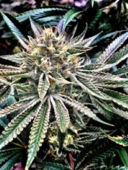
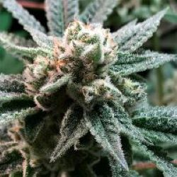
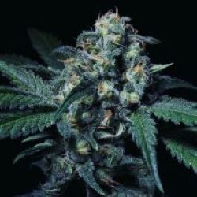
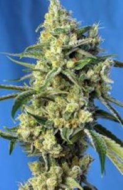
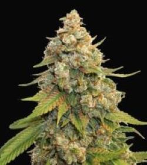

Actualmente en nuestro club estamos cultivando cinco variedades de semillas fotoperiodicas
El Xupet Negre
El Xupet Negre de R-Kiem Seeds son semillas feminizadas con una ligera dominancia Indica. Se trata de un híbrido Rabid Hippie Cut x GMO desarrollado en honor al artista urbano "EL XUPET NEGRE" de Barcelona. Es un híbrido muy completo y de una calidad excepcional. Destaca por su gran producción y gran cantidad de resina que producen sus cogollos en cualquier medio de cultivo. De estructura compacta, se caracteriza por su color verde oscuro con tendencia a adquirir tonos púrpuras con temperaturas suaves.
- Banco: R-KIEM -Sublimator
Sublimator de R-Kiem Seeds son semillas feminizadas y una de las novedades de este prestigioso banco. Se trata de un homenaje a Enrico Bouchard y Alan Jaremowich, creadores de la marca de vaporizadores de alta gama Sublimator. Para el desarrollo de este híbrido índica/sativa, los breeders de R-Kiem combinaron una deliciosa Sour Banana con la poderosa Gorilla Glue 4. Es resultado es una planta fácil de cultivar y resistente tanto en interiores como exterior. Los rendimientos son elevados y los efectos muy potentes.
- Banco: R-KIEM -Negra 44
Negra 44 de R-Kiem Seeds son semillas feminizadas índica/sativa. Son el resultado de años de selección y crianza con variedades autóctonas de Sawla, en Ghana, con un clon elite Top 44. Se trata de una planta que produce una gran cantidad de resina y unos cogollos de tamaños impresionantes, ideales para extracciones. Cuenta con un crecimiento rápido desde el primer día, con una estructura de árbol de navidad. Tiene internudos cortos, un color verde muy característico y una altura media. Desde los primeros días de floración los cogollos se van cubriendo de una capa de resina muy aromática y espesa.
- Banco: R-KIEM -Amnesia Haze
Amnesia Haze de Royal Queen Seeds es una variedad con gran dominancia sativa, una genial versión de la legendaria variedad holandesa del mismo nombre. Se trata de una variedad muy fácil de cultivar, de gran sabor y potencia extrema. En exterior crece con un enorme vigor desde los primeros días de cultivo con una estructura típica de sativa con largas y robustas ramas que ayudarán a soportar el peso de los grandes y resinosos cogollos. En interior es una variedad perfecta para cultivos en SOG por su facilidad para concentrar las producciones en largas y gruesas apicales. También en SCROG ya que ramifica fuertemente cuando se le fuerza con podas o guiados, consiguiendo cubrir grandes superficies en pocas semanas.
- Banco: Royal Queen Seeds -Golden Lemon Haze
Golden Lemon Haze de Seedstockers son semillas con dominancia Sativa. Se trata de un cruce de dos de los mejores híbridos Haze como son Lemon Haze y Golden Amnesia. Es una planta elegante, fácil de cultivar y que ofrece cosechas de gran calidad. Los cogollos son grandes y desprenden un fuerte aroma a limón. El sabor es también muy cítrico y duradero.
- Banco: Seed Stockers -